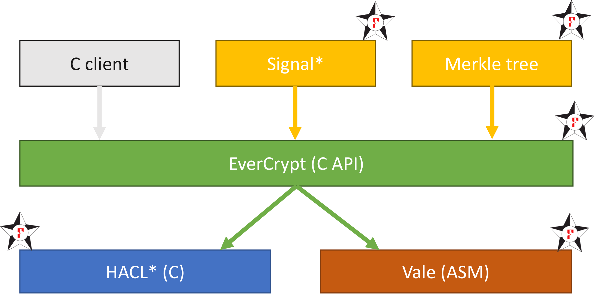

HACL*, Vale, and EverCrypt¶
The hacl-star repository contains code from several related projects developed as part of Project Everest, which aims to build and deploy a verified HTTPS stack. These components are arranges as shown below.
- HACL* provides a set of highly efficient, pure C implementations of complete cryptographic primitives. Each algorithm comes with its own API callable from C clients.
- Vale provides optimized assembly (ASM) core routines for performance-critical code. Vale code is not intended to be called from C by end users.
- EverCrypt brings HACL* and Vale under an abstract, high-level API that automatically picks the best Vale or HACL* implementation depending on the machine the code is running on (multiplexing). EverCrypt also offers a single API for all algorithms from the same family (e.g. AEAD, hashes), allowing clients to reconfigure their choice of algorithm dynamically without recompiling (agility).
All of this code is verified using the F* programming language; once verified, our code is extracted to a mixture of C and ASM.
Our code is callable from C clients, and from OCaml, via ctypes bindings. A subset of our code (the HACL API) compiles to WebAssembly via a dedicated, formalized codepath of the KreMLin compiler and can be used for any Web context (e.g. Electron, website) where modern, trustworthy cryptography is in order.
In addition to unverified clients, verified clients can be built atop the EverCrypt API. These include a library of Merkle Trees, distributed in the present repository, but also an implementation of the Signal protocol in F*.

{kind=link}